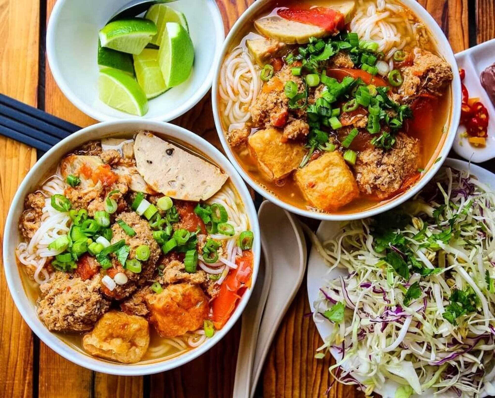
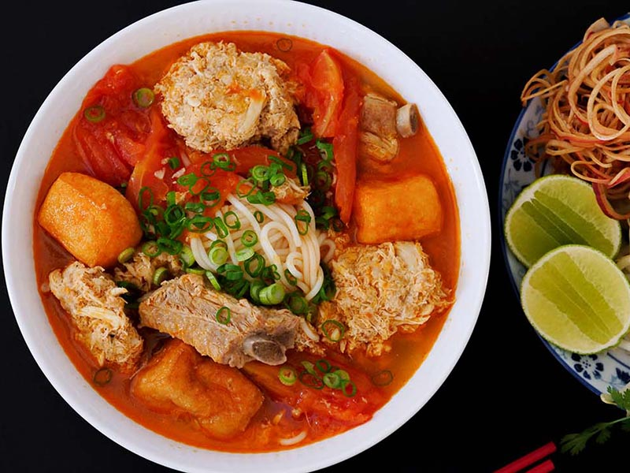
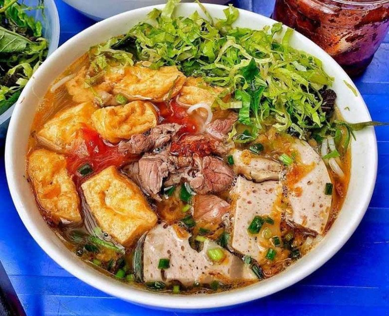

Bún Riêu Cua là một món ăn truyền thống nổi tiếng của Việt Nam, đặc
trưng bởi hương vị đậm đà, chua thanh và thơm lừng từ gạch cua, riêu cua
béo ngậy, kết hợp cùng đậu hũ chiên, cà chua và các loại rau sống tươi
mát. Đây là món ăn được nhiều người yêu thích, phù hợp cho bữa sáng, bữa
trưa hoặc bữa tối.



Nguyên liệu
Cua đồng: 500g (chọn cua tươi, còn sống để riêu cua
được ngon và béo)
Bún tươi: 500g (chọn loại bún sợi nhỏ hoặc bún lá)
Mỡ heo: 50g (tùy chọn, để làm tóp mỡ và phi hành khô
tạo độ béo thơm)
Hành tím: 3-4 củ (băm nhỏ)
Hành lá: 3-4 nhánh (cắt khúc)
Rau sống ăn kèm: Xà lách, tía tô, kinh giới, giá đỗ,
rau muống chẻ, hoa chuối bào, bắp cải thái sợi...
Gia vị:
Mắm tôm: 1-2 muỗng canh (tùy khẩu vị, không thể thiếu để tạo hương
vị đặc trưng)
Me chua: 1-2 quả (hoặc 1-2 muỗng canh nước cốt me/sấu/dấm bỗng để
tạo vị chua thanh)
Nước mắm ngon: 2-3 muỗng canh
Đường: 1-2 muỗng cà phê
Bột ngọt: 1/2 muỗng cà phê (tùy chọn)
Tiêu xay: 1/2 muỗng cà phê
Dầu ăn: Để chiên đậu và phi hành
Hạt nêm: 1 muỗng cà phê (tùy chọn)
Gia vị ăn kèm: Ớt tươi thái lát, chanh tươi.
Cách làm
Bước 1: Sơ chế cua đồng và lấy riêu cua
Rửa sạch cua đồng dưới vòi nước chảy. Tách mai cua, dùng tăm hoặc
muỗng nhỏ khêu phần gạch cua béo ngậy ra bát để riêng.
Bóc bỏ yếm và phổi cua. Giã nhuyễn phần thân cua với một chút muối
hạt (khoảng 1/2 muỗng cà phê).
Cho phần cua đã giã vào một tô lớn, thêm khoảng 1.5 - 2 lít nước
lọc vào, dùng tay bóp nhẹ để thịt cua tan đều trong nước.
Lọc hỗn hợp nước cua qua rây lọc hoặc vải màn sạch nhiều lần để
loại bỏ bã cua, chỉ lấy phần nước cốt cua trong. Bã cua bỏ đi.
Bước 2: Nấu riêu cua
Đặt nồi nước cốt cua lên bếp, đun với lửa vừa. Khi nước bắt đầu
nóng lên, khuấy nhẹ tay theo một chiều để riêu cua từ từ đóng
thành mảng và nổi lên trên. Không khuấy mạnh khi nước đã sôi để
tránh làm nát riêu.
Khi riêu cua đã nổi hết lên bề mặt và kết thành mảng, dùng muỗng
vớt nhẹ nhàng riêu cua ra một bát riêng. Giữ lại nước trong nồi để
làm nước dùng.
Bước 3: Chuẩn bị các nguyên liệu khác
Đậu phụ: Cắt đậu phụ thành miếng vuông vừa ăn,
chiên vàng đều các mặt trong chảo dầu nóng. Vớt ra để ráo dầu.
Cà chua: Rửa sạch, bổ múi cau.
Tóp mỡ (tùy chọn): Mỡ heo thái hạt lựu, cho vào
chảo rán nhỏ lửa cho ra hết mỡ và tóp mỡ vàng giòn. Vớt tóp mỡ ra
bát, giữ lại phần mỡ nước để phi hành.
Hành tím: Bóc vỏ, băm nhỏ.
Hành lá: Rửa sạch, thái khúc.
Rau sống: Rửa sạch các loại rau sống, ngâm nước
muối loãng khoảng 10 phút rồi vớt ra, để ráo. Hoa chuối bào và rau
muống chẻ có thể ngâm vào nước có pha chút giấm hoặc chanh để giữ
màu trắng và giảm độ chát.
Bước 4: Nấu nước dùng Bún Riêu Cua
Dùng một phần mỡ nước từ tóp mỡ (hoặc dầu ăn), phi thơm hành tím
băm.
Cho gạch cua đã khêu ở Bước 1 vào chảo hành phi, đảo nhanh tay cho
gạch cua tan ra và có màu vàng cam đẹp mắt. (Bước này giúp nước
dùng có màu và mùi thơm đặc trưng của gạch cua).
Đổ phần gạch cua đã phi vào nồi nước dùng cua đã vớt riêu.
Cho cà chua bổ múi cau vào nồi nước dùng, đun sôi.
Thêm me chua (hoặc sấu/dấm bỗng) vào nồi để tạo vị chua thanh.
Nêm nếm nước dùng với nước mắm, đường, hạt nêm, bột ngọt (nếu
dùng) và đặc biệt là mắm tôm. Nêm từ từ mắm tôm để nước dùng có
mùi thơm đặc trưng nhưng không bị nồng gắt. Nêm nếm lại cho vừa
khẩu vị chua, cay, mặn, ngọt hài hòa.
Cho riêu cua đã vớt và đậu phụ chiên vào nồi nước dùng. Đun sôi
nhẹ trở lại.
Bước 5: Hoàn thiện và thưởng thức
Chần bún tươi qua nước sôi khoảng 30 giây - 1 phút cho bún nóng và
mềm, vớt ra để ráo.
Xếp bún vào tô. Lần lượt gắp riêu cua, đậu phụ chiên, cà chua vào
tô bún.
Chan nước dùng riêu cua đang sôi nóng hổi vào tô.
Rắc hành lá thái nhỏ và tóp mỡ (nếu dùng) lên trên.
Dọn bún riêu cua ra bàn kèm với đĩa rau sống tổng hợp, ớt tươi
thái lát và chanh tươi để vắt thêm tùy thích.
Thưởng thức ngay khi còn nóng.
Mẹo nhỏ để Bún Riêu Cua ngon hơn:
Chọn cua: Nên chọn cua đồng tươi sống, yếm to, chắc
để có nhiều gạch và thịt cua.
Giã cua: Giã cua với một chút muối sẽ giúp riêu cua
dễ kết tủa và nổi mảng hơn.
Lọc cua: Lọc nước cua thật kỹ qua rây hoặc vải màn
để loại bỏ hết bã, giúp nước dùng trong và không bị sạn.
Nấu riêu: Khi nấu riêu cua, không nên đun lửa quá
to hoặc khuấy mạnh tay khi riêu đang kết tủa để tránh làm nát riêu.
Gạch cua: Phi gạch cua với hành tím và dầu ăn sẽ
giúp nước dùng có màu sắc hấp dẫn và mùi thơm đặc trưng.
Mắm tôm: Mắm tôm là linh hồn của món bún riêu. Nên
cho từ từ và nêm nếm theo khẩu vị để tránh bị quá nồng.
Vị chua: Có thể dùng me, sấu, dấm bỗng hoặc thậm
chí là dứa (thơm) để tạo vị chua cho nước dùng.
Rau sống: Bún riêu cua ăn kèm với đa dạng các loại
rau sống sẽ tăng thêm hương vị và độ tươi ngon.
Bình luận và Đánh giá
Đánh giá của bạn
Chưa có bình luận nào.